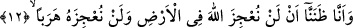
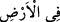
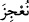
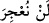
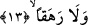

karıştıranlardır. “Nefislerine zulmedenlere” gelince bunlar; “türlü türlü yollar
tutanlar”ın zümresine dâhildirler. Şu hâlde bu ifâde tahsisten sonra tâmim
kabilindendir. Âyette yer alan ve “daha aşağı” şeklinde tercüme edilen “dun” kelimesi,
“bundan başka” anlamına da gelebilir. O zaman son zikredilen iki kısım, kendisine
zulmedenlerin içine girmiş olur.
12. (Artık) şu gerçeği şüphesiz anladık ki, biz yeryüzünde bulunsak da Allah’ı
âciz bırakamayacağız, başka yere kaçmakla da elinden kurtulamayacağız.
Âyette yer alan ve “zannettik” anlamına gelen “__WORD__/zanennâ” ifâdesi, bildik
anlamınadır. Buna göre âyet-i kerîmenin mânâsı şu anda biz Allah’ın âyetleri üzerinde
düşünerek ve istidlal yaparak anladık ki... Şu hâlde burada “zan”, “yakinen ve kesin
bilmek” anlamınadır. Çünkü îman zan ile meydana gelmez. Sonra biz biliyoruz ki
onların maksadları arkadaşlarını da îmâna teşvik etmek ve bulundukları durumdan
kaçınmalarını sağlamaktır. Bu da zanla değil, bilgiyle olur. Nitekim Peygamber (s.a.)
Efendimiz şöyle buyururlar: “Ben apaçık bir uyarıcıyım” [140]
“Biz yeryüzünde bulunsak da Allah’ı âciz bırakamayacağız.” Yâni biz yeryüzünün
hangi köşesinde olursak olalım, Allah’ı âciz bırakamayacağız. Burada yer alan “__WORD__/fil ardi” ifâdesi “__WORD__/nu’cize” fiilinin fâilinden hâldir.
“Başka yere kaçmakla da onu asla âciz bırakamayacağız.” Kaçmak anlamına gelen
“__WORD__/heraben” kelimesi “__WORD__/len nu’cize” fiilinin fâilinden hâldir. Ona göre âyetin
mânâsı şöyle olur: “Bizler yeryüzünden göğe, denizlere ve kaf dağına kaçsak bile
Allah’ı âciz bırakamayacağız veya bizler, Allah Teâlâ hakkımızda herhangi bir şeyi
yapmayı dilediğinde O’nu yeryüzünde âciz bırakamayacağız gibi, yeryüzünden kaçmayı
dilediğimizde de O’nu asla âciz bırakamayacağız. Şu hâlde bir yerden bir başka yere
kaçmakla kaçmamak -onun elinden kurtuluşumuzu sağlama bakımından herhangi bir işe
yaramayacağı açısından- birbirine eşittir.”
Âyette “yeryüzü” kelimesinin zikredilmesi, olanca genişliği ve düzlüğüne rağmen
Allah Teâlâ’dan kaçma ve elinden kurtulmaya yaramayacağına işâret için olabilir.
13. Doğrusu biz, o hidâyeti (Kur’an’ı) işitince ona îman ettik. Kim Rabbine îman
ederse, artık ne bir (ecrinin) eksikliğe uğratılmasından ne de haksızlık